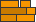
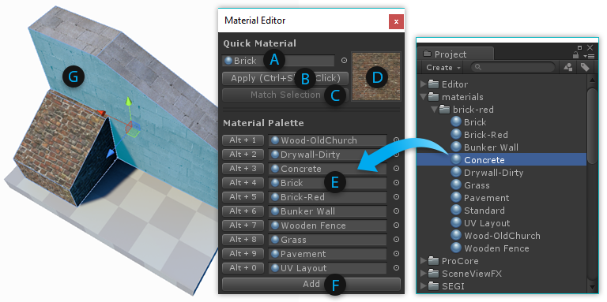
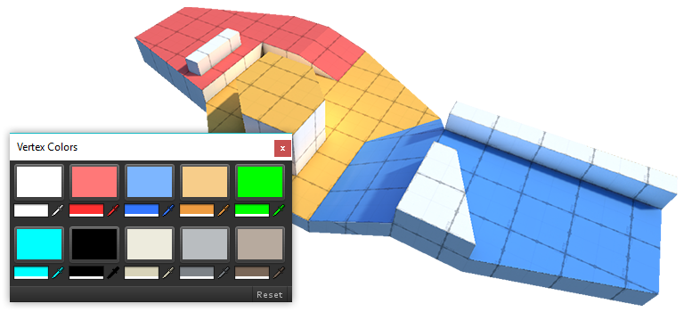
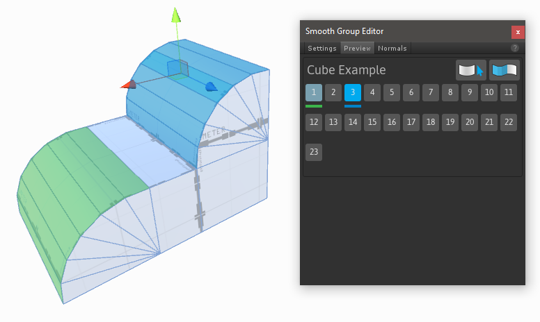

Shape Tool
Keyboard Shortcut : CTRL SHIFT K
Purpose : Create new editable shapes such as cylinder, arch, and stairs.
Each shape has specific properties which can be customized before creation. For example, the stairs shape lets you choose items like step height, arc, and which parts of the stairway to build.

Usage
- Click New Shape.
- If Shape Preview is enabled, you will see a blue preview object in the scene.
- Choose the shape you'd like to create (ex, cube, cylinder, torus, etc).
- Set the options (ex, width, height, radius, number of stairs, etc).
- You may move or rotate the preview object within your scene.
- Click Build Shape to create your final shape.
 Material Tools
Purpose : Apply materials to objects or faces.

Quick Material Usage
- (A) The current Quick Material.
- (B) Apply the material to the selected faces.
- (C) Pick your material from the selected face.
- (D) Preview of the current Quick Material.
Hold CTRL SHIFT while clicking on a face to apply the Quick Material.
Material Palette Usage
- (E) Drag-and-drop your often-used materials to these slots.
- (F) Create additional Material Palette slots.
You can also press ALT (number key) to apply materials from the Palette.
Texturing and UVs
Purpose: Opens the UV Editor.

The UV Editor Panel includes both Auto UV tools, and a complete Manual UV Editing and Unwrapping system.
More Info: Texturing and UVs
Vertex Color Tools
Purpose : Opens the Vertex Coloring controls, for applying or painting vertex colors onto meshes.

Applying Vertex Colors is a great way to colorize levels for prototyping, team layout, zones, etc.
 Smoothing Groups
Smoothing Groups
Purpose: Create a smooth and rounded look, or sharp and hard cornered.
Usage:

- Choose Face editing from the Edit Mode Toolbar
- Select a group of faces that you want to have smooth adjoining edges
- Click an unused smooth group number in the Smooth Group Editor
- Note Smooth groups already in use are shown with a light blue highlight
- To clear selected face smoothing groups, select the faces and click the
 icon
icon - To select all faces matching with the current smooth group index, use the icon